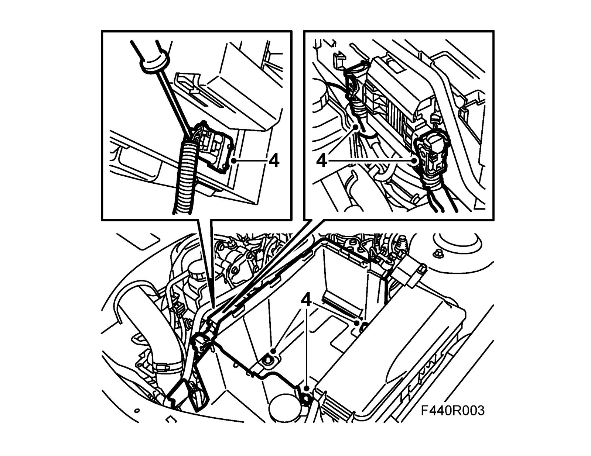
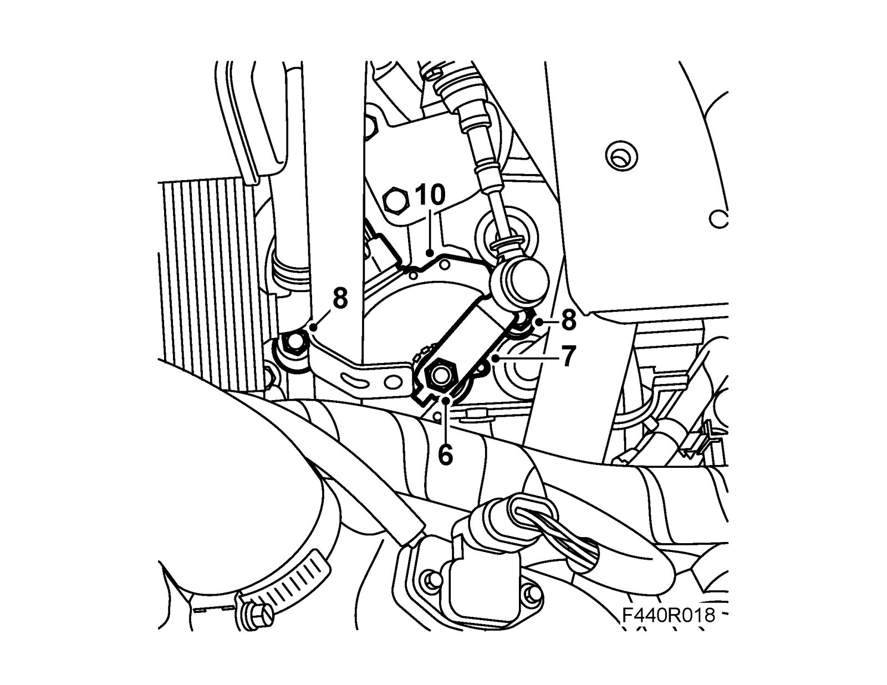
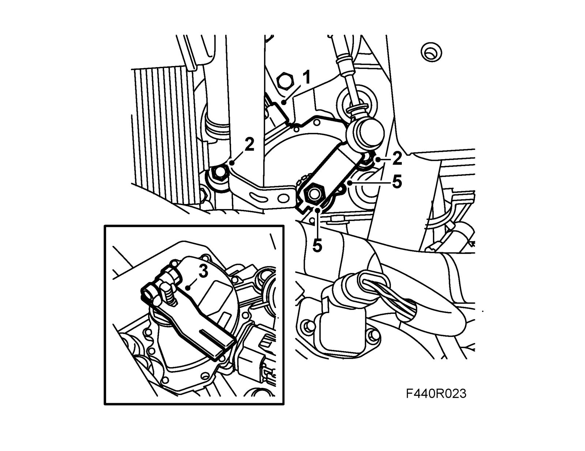
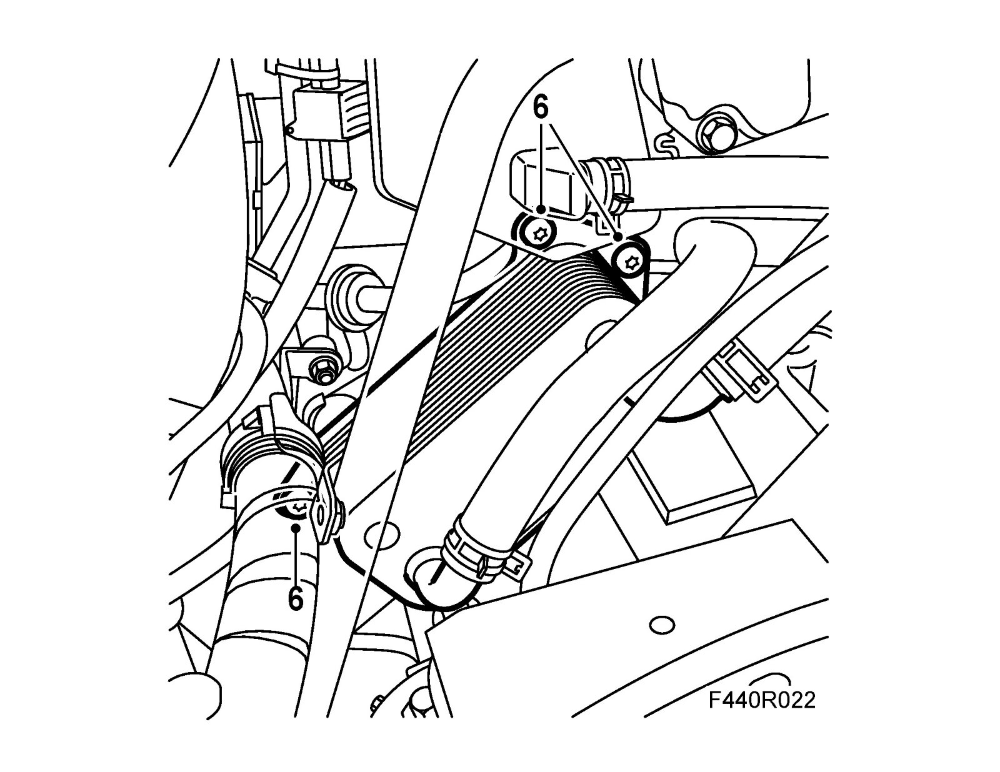
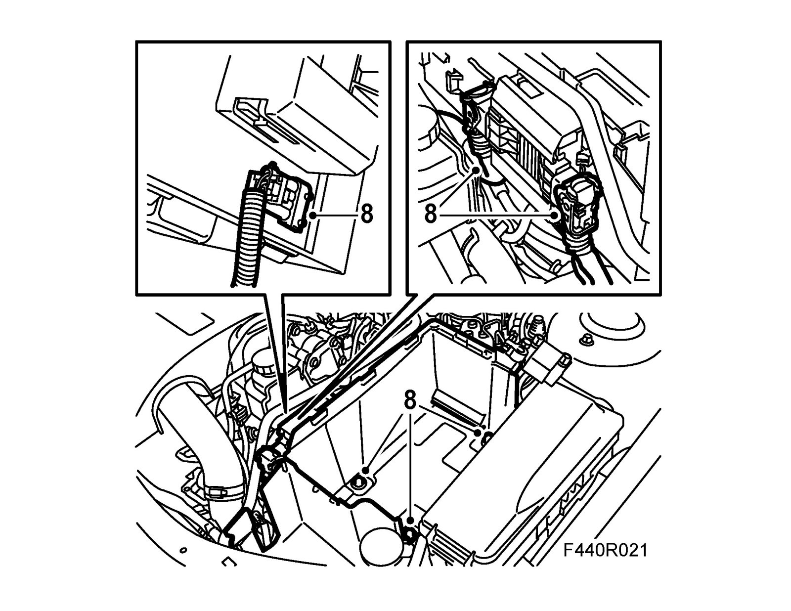
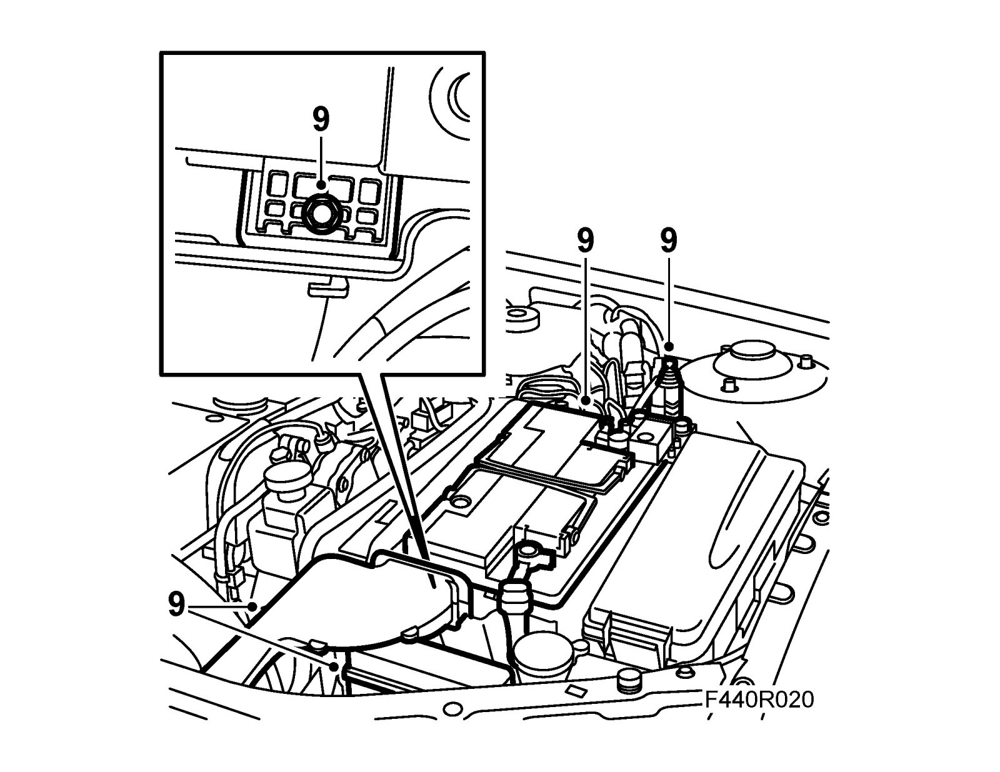
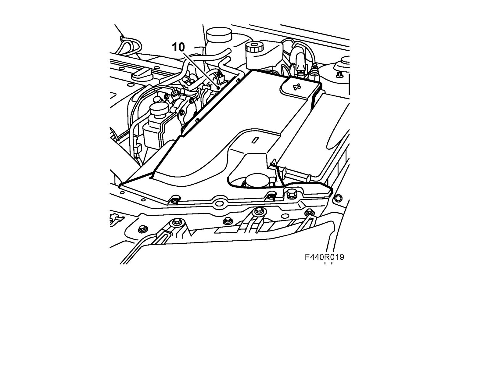

Transmission Position Sensor/Switch: Service and Repair
Transmission range switch, automaticTo remove
1. Place covers over the wing to keep the paintwork clean and protect it from damage.
2. Remove the battery cover.
3. Remove the battery, coolant pipe, main fuse box and bonnet switch.
4. Unplug the control module connector and remove the battery tray. Unplug the connector under the control module.
Warning
If the car has recently been driven, the oil cooler is very hot. Wait until it has cooled.

5. Place a receptacle under the car and lay a rag under the oil cooler. Remove the oil cooler. Leave the water hoses in place and move the oil cooler so that the gear selector position sensor screw is accessible.
6. Put the gear lever in position N and undo the nut on the lever.

7. Remove the lever.
8. Remove the gear selector position sensor retaining bolts.
9. Bend out the lugs and remove the gear selector position sensor nut.
10. Unplug the electric connector and lift the sensor off the shaft.
To fit
1. Fit the sensor to the shaft and plug in the connector.
2. Tighten the bolts on the gear selector position sensor first (important). Then tighten the nut on the gear selector position sensor and bend up the lug.
Tightening torque, bolts 25 Nm (18 lbf ft)
Tightening torque, nut 8 Nm (6 lbf ft)

3. Engage neutral, fit 87 92 467 Adjustment tool, gear selector position sensor. Undo the bolts for the gear selector position sensor and adjust it so that the line is visible in the middle of the adjustment tool groove. Tighten the bolts.
Tightening torque 25 Nm (18 lbf ft)
4. Remove the adjustment tool.
5. Fit the gear selector lever.
Tightening torque 20 Nm (15 lbf ft)
6. Fit the oil cooler with new O-rings.
Tightening torque 24 Nm (18 lbf ft)

7. Clean away any spilled oil on the engine and transmission.
8. Plug in the connectors under the control module. Plug in the control module connector and fit the battery tray.

9. Fit the bonnet switch, cooling pipe, main fuse box and battery. Connect the battery cables.

10. Fit the battery cover.

11. Check the engine oil level. Top up as necessary.
12. Remove the wing covers.
13. Connect Tech 2 and clear any fault codes.
14. Carry out Checking and adjustment, selector lever cable. Adjustments
15. Carry out Measures after disconnecting the battery.